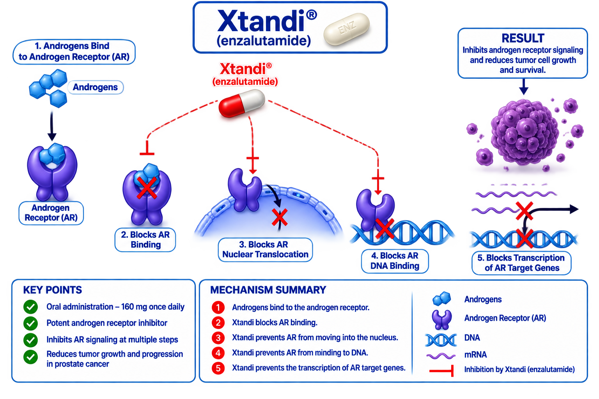

Astellas
Xtandi (enzalutamide) is an oral androgen receptor inhibitor used in the treatment of advanced prostate cancer. It inhibits androgen receptor signaling at multiple levels, including androgen receptor binding, nuclear translocation, and DNA binding, thereby suppressing androgen-driven prostate cancer cell growth.
Xtandi
Enzalutamide
Androgen Receptor Inhibitor
Oral
Pfizer / Astellas
Enzalutamide is an androgen receptor inhibitor. It competitively inhibits androgen binding to the androgen receptor and prevents androgen receptor nuclear translocation and DNA binding. This suppresses androgen receptor-mediated gene transcription and decreases prostate cancer cell proliferation and survival.

| Trial | Setting | Outcome |
|---|---|---|
| PREVAIL | Metastatic CRPC | Improved Overall Survival and Radiographic PFS |
| PROSPER | Non-Metastatic CRPC | Improved Metastasis-Free Survival |
| EMBARK | High-Risk Biochemical Recurrence | Improved Metastasis-Free Survival |
| ARCHES | Metastatic CSPC | Improved Radiographic PFS |
Recommended dose: 160 mg orally once daily, with or without food.
| Recommended Dose | 160 mg Once Daily |
|---|---|
| Route | Oral |
| Schedule | Continuous Treatment |
| Administration | With or Without Food |